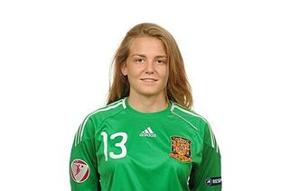

Ezzcoins › Player pages › Esther Sullastres
80
GK

Esther Sullastres
DIV79
HAN79
KIC77
REF75
SPD79
POS81
Photo (cropped): Esther Sullastres · CC BY-SA 3.0 · Wikimedia Commons
Photo source
https://commons.wikimedia.org/wiki/File:Esther_Sullastres.jpg
Licence: https://creativecommons.org/licenses/by-sa/3.0
Esther Sullastres
80 GK · Sevilla FC · Liga F Moeve ·  Spain
Spain
No console price yet. Add this player to your watchlist on Ezzcoins: the most-watched players get a price every hour.
78Meta rating · GK −2 vs overall
DIV79
HAN79
KIC77
REF75
SPD79
POS81
- Position
- GK
- Club
- Sevilla FC
- League
- Liga F Moeve
- Nation
- Spain
- Skill moves
- 1★
- Weak foot
- 3★
- Preferred foot
- Right
- Full name
- Esther Sullastres Ayuso
- Football
- Women's football
Meta rating: Ezzcoins' own estimate of how well this card plays in game, worked out from its stats for each position it can play, its skill moves, weak foot and PlayStyle+. An average card scores about its overall rating; higher means it plays above its rating.
Watch on Ezzcoins